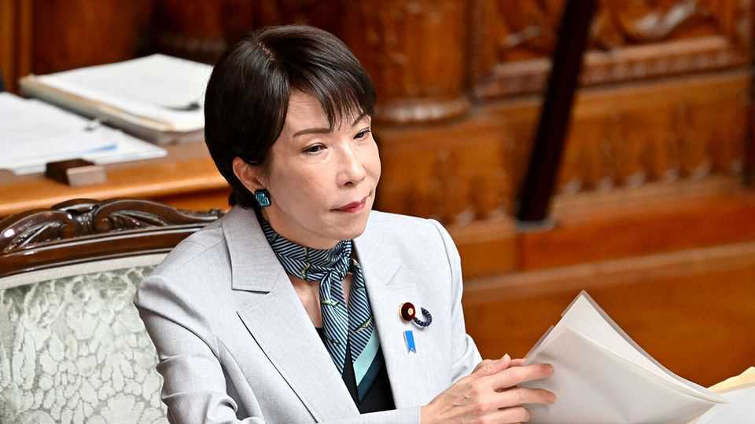

Japan's long-overdue revamp of its intelligence services
Growing threats from enemies and a less dependable America have driven the move

Aug 13th 2026
A PHOTOGRAPH OF a wooden plaque with handwritten characters marked the launch of Japan’s new “National Intelligence Bureau” (NIB) on July 31st. It was an appropriately understated reveal for a big overhaul of Japanese spookery.
Japan’s intelligence apparatus has long been fragmented and feeble. Since the country’s defeat in the second world war, legal and political constraints have made it hard to counter adversaries snooping around inside Japan and to run human intelligence (HUMINT) operations abroad. Japan’s prime minister, Takaichi Sanae, calls the creation of the NIB, along with the establishment of a new National Intelligence Council, the first steps of broader reforms necessary to navigate an increasingly dangerous world.
Japan was once a formidable intelligence player. During the Russo-Japanese war in the early 20th century, Japanese forces cracked codes, ran agents across the Far East and funded anti-tsarist agitators in Europe; during the second world war, “special duty units” undertook covert actions across Asia.
But following Japan’s defeat, the imperial architecture was largely demolished. Attempts to establish a new centralised intelligence service faced severe resistance from a public that remembered imperial-era secret police all too well; many Japanese leaders were happy to rely upon America for intelligence, as they did for security more broadly. Japan’s own intelligence activities were spread across discrete departments at the foreign, defence and justice ministries as well as the police agency. The Cabinet Intelligence and Research Office (CIRO), nominally the highest intelligence body in the country, lacked the authority to manage the fragmented agencies. As one Japanese official grumbled in the early 2000s, compared with America’s CIA, Japan’s CIRO was “about the equal of a nursery school”.
The latest reforms are intended to help Japan’s intelligence community grow up fast. The first phase involves “getting the structure right”, says Richard Samuels, author of “Special Duty”, a history of Japanese intelligence. The new bureau, an upgraded version of the CIRO, will have the authority to consolidate information from across the disparate ministries and generate synthesised analyses. Meanwhile, the intelligence council, which the prime minister personally heads, gives political leaders the ability to set intelligence strategy and to integrate findings into policymaking. The next planned steps include passing an anti-espionage law to beef up counter-intelligence, and creating a new foreign-intelligence agency to conduct operations abroad.
Though such reforms have been discussed for decades, the process has accelerated in recent years. Growing threats from China, Russia and North Korea have sharpened minds, while increasing anxiety about American reliability has heightened the urgency over developing home-grown capabilities. Ms Takaichi made intelligence reform a pillar of her political platform. As the memory of the wartime era has faded, so too has public opposition to new security institutions.
For the reforms to succeed, Japan needs to overcome several long-standing problems. First, says Kotani Ken of Nihon University in Tokyo, are the bureaucratic “turf battles” among the producers of intelligence. The second issue is the relative lack of sophistication of Japan’s consumers of intelligence. The country’s politicians are “not used to utilising intelligence in policymaking”, Mr Kotani notes.
In its own recommendations, the ruling Liberal Democratic Party calls on Diet members to be more proactive, rather than acting like customers “passively ordering omakase [an instruction to leave the choice to the chef] at a sushi restaurant.” ■
For exclusive coverage of Asian politics, economics and security, sign up to Asia Bulletin, our weekly subscriber-only newsletter.